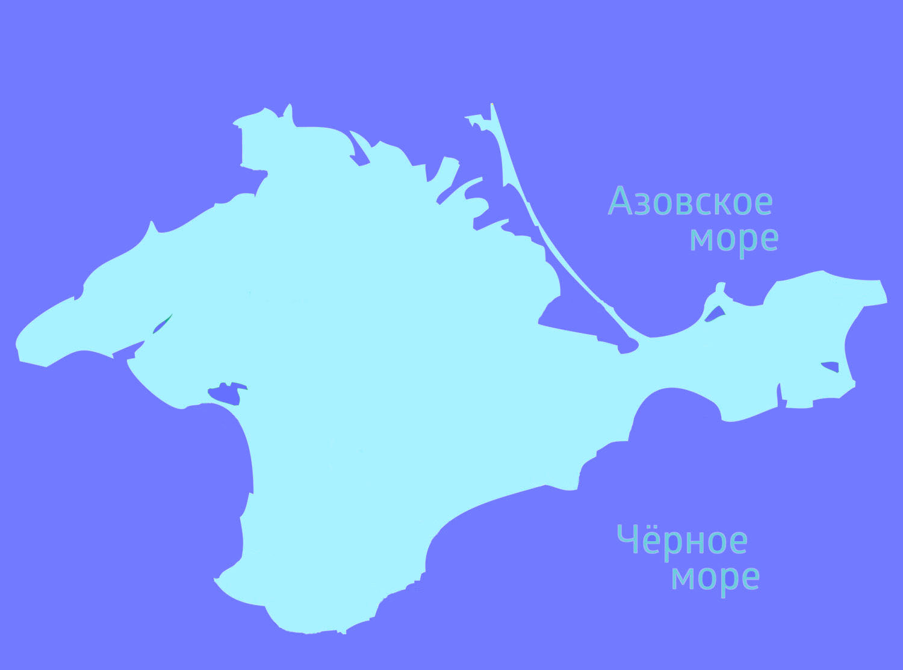

Вас приветсвтует путеводитель по Крыму! Здесь вы можете найти информацию об основных достопримечательностях республики Крым. Нажимайте на активные точки карты, чтобы узнавать информацию об этих местах